¹H NMR Spectroscopy 2
Chapter H3.3 · ¹H NMR Spectroscopy Part 2
On this page
Introduction
Part 1 was about where a signal appears. A spectrum tells you three more things, and together they let you put a molecule together piece by piece:
- the number of signals: how many different kinds (sets) of hydrogen atom the molecule has;
- the area of each signal: how many hydrogen atoms are in each set;
- the shape of each signal: how many hydrogen atoms are on the neighbouring carbon atoms.
This Part takes them in turn, adds the trick of shaking the sample with D2O, and then uses everything together to solve and predict whole spectra.
Key terms
You will use these terms throughout this Part.
| Term | Meaning |
|---|---|
| Equivalent protons | Protons in identical environments in the molecule (related by its symmetry, or made identical by fast rotation about single bonds). They absorb at the same δ. |
| Signal | The absorption by one set of equivalent protons; it may be one line or a group of lines. |
| Integration (peak area) | The area under a signal, which is proportional to the number of protons giving it. |
| Integration trace | A line drawn across the spectrum that rises in a step at each signal; the step heights are in the ratio of the peak areas. |
| Spin-spin splitting (coupling) | The splitting of the signal of one set of protons into several lines by the protons on the neighbouring carbon atom(s). |
| Multiplicity | The number of lines in a signal: singlet (s, 1), doublet (d, 2), triplet (t, 3), quartet (q, 4), quintet (5), sextet (6), septet (7); a more complicated signal is a multiplet (m). |
| n + 1 rule | A signal is split into n + 1 lines by n equivalent protons on the neighbouring carbon atom(s). |
| First-order spectrum | A spectrum in which the n + 1 rule and Pascal's triangle describe every signal (the signals are far apart compared with their splittings). |
| Labile proton | An O–H or N–H hydrogen that exchanges quickly with other O–H and N–H hydrogens. |
| D2O exchange (D2O shake) | Shaking the sample with a few drops of D2O replaces labile H by D, so their signal disappears. |
| Coupling constant, J (Enrichment) | The spacing between the lines of a multiplet, in Hz. |
Equivalent protons and the number of signals
Protons in identical environments are equivalent: they feel exactly the same field, absorb at the same δ, and together give one signal. So the number of signals equals the number of sets of equivalent protons.
Two ideas decide which protons are equivalent:
- symmetry: the two CH3 groups of propane are related by the molecule's symmetry, so their six hydrogen atoms are equivalent;
- fast rotation about single bonds: a CH3 group spins so fast that its three hydrogen atoms are always equivalent. The same is true of the hydrogen atoms of a CH2 group in a chain, in the molecules in this chapter.
A useful test: imagine replacing each hydrogen atom in turn by another atom, X. If two replacements give the same compound, those two hydrogen atoms are equivalent. In propane, replacing any H of either CH3 gives 1-X-propane, but replacing an H of the CH2 gives 2-X-propane: two sets, two signals.
Worked example 1: counting signals
State the number of sets of equivalent protons, and so the number of signals, in each of propane, butane, 2-methylpropane, propan-2-ol, propanone, ethanol, methylbenzene, 1,4-dimethylbenzene and benzene. The sets are labelled in Fig 11.
(To answer this, you have to look for symmetry, remember that all the H on one CH3 are equivalent, and treat O–H as a set of its own.)
- Propane (2): the two CH3 groups are equivalent (6H, a); the CH2 is different (2H, b).
- Butane (2): two equivalent CH3 (6H) and two equivalent CH2 (4H): the molecule is symmetrical end to end.
- 2-methylpropane (2): three equivalent CH3 (9H) and one CH (1H).
- Propan-2-ol (3): two equivalent CH3 (6H), the CH (1H) and the OH (1H).
- Propanone (1): two equivalent CH3 (6H).
- Ethanol (3): CH3 (3H), CH2 (2H) and OH (1H): the three signals of Fig 1.
- Methylbenzene (4 sets in principle, 2 signals seen): CH3 (3H); on the ring, the two H next to the CH3 (b), the two one further round (c) and the one opposite (d).
- 1,4-dimethylbenzene (2): the two CH3 groups are equivalent (6H), and so are all four ring H (4H), because the two groups are the same.
- Benzene (1): all six H are equivalent (6H).
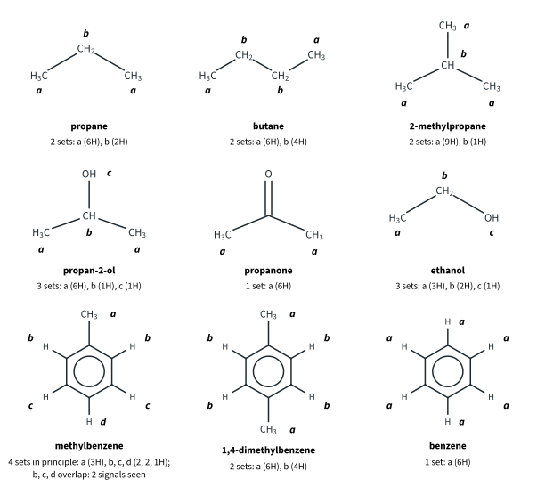
Peak area and proton counting
The area under a signal is proportional to the number of protons that give it. The spectrometer measures the areas (the integration) and shows them either as numbers above the signals or as an integration trace: a line that runs across the spectrum and rises in a step at each signal, the height of each step being proportional to the area (Fig 12).
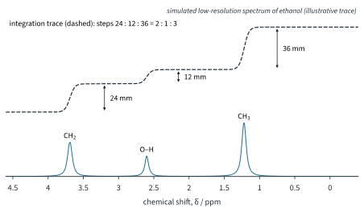
The areas give only a ratio. To turn it into actual numbers of hydrogen atoms you need the molecular formula:
- Divide every area (or step height) by the smallest, to get the simplest whole-number ratio.
- Add up the ratio and compare it with the number of H in the molecular formula. If the formula has twice (or three times) as many H, multiply every number by 2 (or 3).
Worked example 2: proton counting
(a) The integration trace of ethanol, C2H6O, has steps of 24, 12 and 36 mm (Fig 12). Find the number of H in each set. (b) The signals of 2-methylpropan-1-ol, C4H10O, at δ 3.40, 1.9, 1.77 and 0.92 have integrals of 0.62, 0.31, 0.31 and 1.86 (arbitrary units). Find the number of H in each set. (c) The two signals of 1,4-dimethylbenzene, C8H10, have areas in the ratio 2 : 3. How many H give each signal?
(To answer each part, you have to divide by the smallest area, then check the total against the formula.)
(a) 24 : 12 : 36 = 24/12 : 12/12 : 36/12 = 2 : 1 : 3; total 6 = the 6 H of C2H6O
So the CH2 signal (δ 3.69) is 2H, the OH (about δ 2.6) 1H and the CH3 (δ 1.22) 3H.
(b) 0.62 : 0.31 : 0.31 : 1.86 = 0.62/0.31 : 0.31/0.31 : 0.31/0.31 : 1.86/0.31 = 2 : 1 : 1 : 6; total 10 = C4H10O
(c) The ratio 2 : 3 adds up to 5, but C8H10 has 10 H, so multiply by 2: the ring H signal is 4H and the CH3 signal is 6H.
Spin-spin splitting
Look closely at the signals of chloroethane, CH3CH2Cl (Fig 15, below). Neither is a single line: the CH2 signal is four lines and the CH3 signal three. The splitting comes from the protons on the neighbouring carbon atom.
Why neighbours split a signal
Each proton is a tiny magnet. A proton on the next carbon is either aligned with the applied field or opposed to it, with almost equal chance. When aligned, it adds a tiny extra field to the field felt by our proton; when opposed, it takes a tiny amount away. In the sample, half the molecules have the neighbour one way and half the other way, so our proton's signal is split into two lines of equal height, a doublet.
With two equivalent neighbours there are four arrangements: both aligned, both opposed, and two ways of having one of each. The two mixed arrangements give the same total field, so there are three lines in the ratio 1 : 2 : 1, a triplet. Three neighbours give four lines, 1 : 3 : 3 : 1, a quartet (Fig 13).
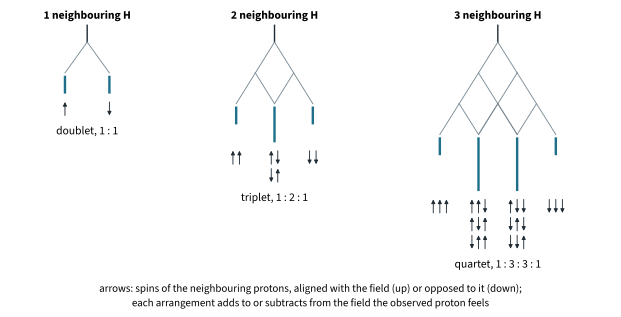
The numbers in Pascal's triangle, in which each number is the sum of the two above it, count the arrangements (Fig 14).
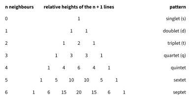
Three points stop the rule being misapplied:
- Equivalent protons do not split each other. The six H of propanone give one singlet; the two CH2 groups of butane do not split each other.
- O–H and N–H protons exchange between molecules so quickly that their neighbours see only an average: the O–H of ethanol is a singlet, and it does not split the CH2 signal.
- Only neighbours count: protons more than three bonds apart do not split each other in the compounds in this chapter. A CH3 on a benzene ring is a singlet, and the CH2 of ethylbenzene is split only by its CH3.
Worked example 3: splitting patterns
Predict and explain the multiplicity of each signal of (a) chloroethane, (b) propan-2-ol and (c) ethanal (literature δ values in Fig 15 and below).
(To answer this, you have to count, for each set, the protons on the neighbouring carbon atom(s), ignoring O–H.)
(a) Chloroethane, CH3CH2Cl. The CH2 protons (δ 3.57) have 3 neighbours on the CH3: 3 + 1 = 4, a quartet, 1 : 3 : 3 : 1. The CH3 protons (δ 1.48) have 2 neighbours on the CH2: a triplet, 1 : 2 : 1. The areas are 2 : 3 (Fig 15).
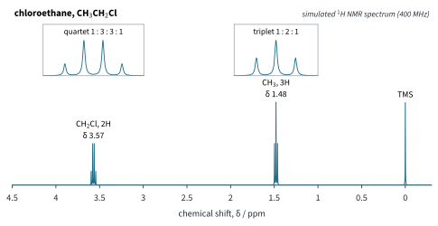
(b) Propan-2-ol, (CH3)2CHOH. The CH proton (δ 4.01) has 6 neighbours (two CH3 groups): 6 + 1 = 7, a septet. The six CH3 protons (δ 1.20) are equivalent and have 1 neighbour, the CH: a doublet, 6H. The O–H (about δ 2.0, varies) is a singlet, often broad. (The spectrum is in Fig 17(a).)
(c) Ethanal, CH3CHO. The CHO proton (δ 9.80) has 3 neighbours: a quartet, 1H. The CH3 (δ 2.21) has 1 neighbour: a doublet, 3H. (The splitting here is much smaller than in an alkyl chain, but the n + 1 rule still holds.)
Notice that two sets of non-equivalent C–H protons on adjacent carbon atoms always split each other (O–H aside). Two patterns are so common that they are worth recognising on sight:
Neighbours on both sides
The middle CH2 of 1-chloropropane, CH3CH2CH2Cl (δ 1.81), has neighbours on both sides: 3 H on the CH3 and 2 H on the CH2Cl. When, as in alkyl chains, all the neighbours split it by about the same amount, add them up: n = 3 + 2 = 5, so the signal is a sextet (6 lines). The CH2Cl (δ 3.47) is a triplet and the CH3 (δ 1.06) a triplet: each has 2 neighbours.
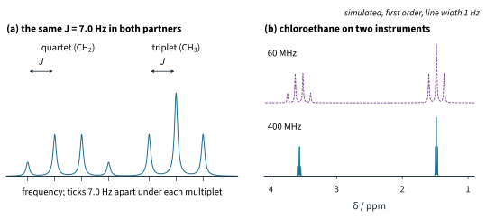
Labile protons and deuterium exchange
Hydrogen atoms on O and N (O–H, N–H and the COOH of acids) are labile: they are passed rapidly between molecules and exchanged with any other labile hydrogen, including the hydrogen of water. C–H hydrogens do not exchange. This gives a simple way of finding O–H and N–H signals.
Record the spectrum, then add a few drops of D2O, shake, and record it again. The labile hydrogen atoms exchange with deuterium:
ROH + D2O ⇌ ROD + HOD
D2O is in large excess, so the position of equilibrium lies well to the right and almost every O–H becomes O–D. Deuterium is invisible in a 1H spectrum (Part 1), so the O–H signal disappears. A new signal from HOD may appear (its position depends on the solvent). The HOD signal near δ 4.8 (literature value) comes from the drops of D2O; water dissolved in CDCl3 itself gives a signal near δ 1.6 (Part 1). Every C–H signal stays exactly as it was.
Worked example 4: the D2O shake
(a) Fig 17 shows the spectrum of propan-2-ol before and after shaking with D2O. Explain the changes. (b) 2-methylpropan-2-ol, (CH3)3COH, gives two singlets, at δ 1.6 (broad, 1H) and 1.28 (9H) (literature values). Predict the spectrum after a D2O shake.
(To answer this, you have to decide which hydrogen atoms are labile.)
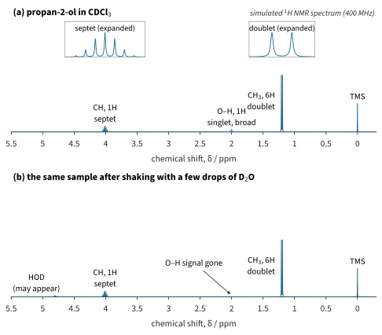
(a) Only the O–H hydrogen is labile. After the D2O shake its singlet at about δ 2.0 has gone, because the O–H has become O–D. The septet (CH) and the doublet (CH3) are unchanged, and a small signal from HOD may appear near δ 4.8.
(b) The broad 1H singlet at δ 1.6 is the O–H: it disappears, leaving only the 9H singlet of the three equivalent CH3 groups at δ 1.28 (and perhaps an HOD signal). So the D2O shake identifies the O–H signal, which is otherwise hard to place because its δ varies so much.
Putting it together
Here is a method for working out a structure from a 1H NMR spectrum and a molecular formula.
Worked example 5: two isomers of formula C8H10
Fig 18 shows the spectra of two aromatic compounds of formula C8H10. One is ethylbenzene, C6H5CH2CH3; the other is 1,4-dimethylbenzene, CH3C6H4CH3. Identify each, explaining every signal.
(To answer this, you have to use the integration and the splitting: both compounds have ring H and alkyl H, so δ alone does not decide.)
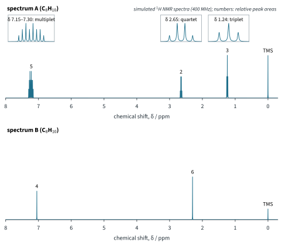
Spectrum A is ethylbenzene. Three signals, areas 5 : 2 : 3 (total 10). The 5H multiplet near δ 7.2 is a C6H5– ring with one substituent. The quartet (2H, δ 2.65) and triplet (3H, δ 1.24) are an ethyl group: CH2 split by 3 H, CH3 split by 2 H. The CH2 is in the range for alkyl next to an aromatic ring (2.3–3.0); the CH3 is in the alkane range.
Spectrum B is 1,4-dimethylbenzene. Two singlets, areas 4 : 6 (2 : 3, × 2 for 10 H). The 4H singlet at δ 7.05 is four equivalent ring H; the 6H singlet at δ 2.30 is two equivalent CH3 groups on the ring (2.3–3.0). Both are singlets because no set has H on a neighbouring carbon: the ring carbons next to the CH3 groups carry no H.
Worked example 6: two esters of formula C4H8O2
Both compounds in Fig 19 show a strong IR absorption at about 1740 cm−1. One is ethyl ethanoate, CH3COOCH2CH3; the other is methyl propanoate, CH3CH2COOCH3. Identify each.
(To answer this, you have to decide which side of the ester O the CH2 is on, from its δ, and where the singlet CH3 is, from its δ.)
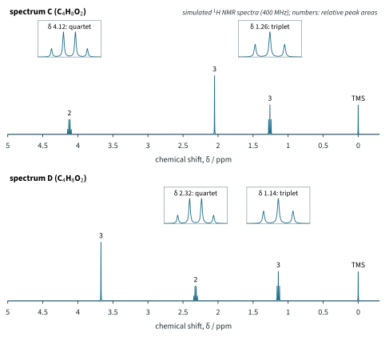
Both IR spectra show the C=O of an ester (1710–1750 cm−1, Data Booklet), and both NMR spectra show an ethyl group (a quartet, 2H, and a triplet, 3H) and a CH3 singlet (3H, no neighbouring H). The difference is in the δ values:
- Spectrum C is ethyl ethanoate. The quartet is at δ 4.12, so the CH2 is joined to the ester oxygen (O–CH2CH3). The singlet at δ 2.05 is a CH3 next to C=O (CH3–C=O).
- Spectrum D is methyl propanoate. The singlet is at δ 3.67, so this CH3 is joined to the oxygen (O–CH3). The quartet at δ 2.32 is a CH2 next to C=O (CH3CH2–C=O).
This is exactly what IR could not tell us at the start of Part 1: NMR shows which groups are joined to which.
Worked example 7: 2-methylpropan-1-ol
Fig 20 shows the spectrum of 2-methylpropan-1-ol, (CH3)2CHCH2OH, C4H10O. Assign each signal, explain its multiplicity, and say which signal disappears after a D2O shake.
(To answer this, you have to count the neighbours of the CH carefully: it has two CH3 groups and a CH2 next to it.)
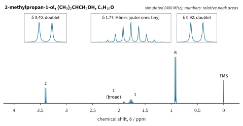
| δ | Area | Multiplicity | Assignment and reason |
|---|---|---|---|
| 3.40 | 2H | doublet | CH2–O: next to O (3.2–4.0); 1 neighbour (the CH) |
| 1.9 | 1H | singlet, broad | O–H: does not split or get split; disappears with D2O |
| 1.77 | 1H | multiplet (9 lines) | CH: 6 + 2 = 8 neighbours, so 8 + 1 = 9 lines (the outer lines are very small: Pascal 1 : 8 : 28 : 56 : 70 : 56 : 28 : 8 : 1) |
| 0.92 | 6H | doublet | two equivalent CH3: alkane range; 1 neighbour (the CH) |
The areas, 2 : 1 : 1 : 6, add up to the 10 H of C4H10O (worked example 2(b)).
Worked example 8: a ring with two different groups
Fig 21 shows the spectrum of 4-methylbenzaldehyde, CH3C6H4CHO, in which the CH3 and CHO groups are opposite each other on the ring. Explain the four signals.
(To answer this, you have to find the sets of ring H: with two different groups opposite each other, the H next to the CHO are not equivalent to the H next to the CH3.)
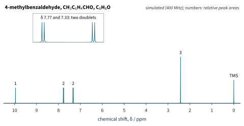
- δ 9.96, 1H, singlet: the CHO proton (aldehyde, 9.3–10.5). It is a singlet because the ring carbon it is attached to has no H.
- δ 7.77 and 7.33, 2H each, doublets: two sets of two equivalent ring H, those next to the CHO and those next to the CH3. Each ring H has one ring H as its neighbour, so each set is a doublet.2
- δ 2.43, 3H, singlet: the CH3 on the ring (2.3–3.0), with no H on the neighbouring ring carbon.
Predicting a spectrum
To predict a spectrum, work the method backwards: list the sets, then give each one a δ range from the booklet, its number of H and its multiplicity. For the two esters of worked example 6:
| Compound | Set | δ range (booklet) | Area | Neighbours, multiplicity |
|---|---|---|---|---|
| ethyl ethanoate | CH3–C=O | 2.2–3.0 (actual 2.05) | 3H | 0: singlet |
| O–CH2– | 3.2–4.0 (actual 4.12) | 2H | 3: quartet | |
| –CH2–CH3 | 0.9–1.7 (actual 1.26) | 3H | 2: triplet | |
| methyl propanoate | O–CH3 | 3.2–4.0 (actual 3.67) | 3H | 0: singlet |
| –CH2–C=O | 2.2–3.0 (actual 2.32) | 2H | 3: quartet | |
| CH3–CH2– | 0.9–1.7 (actual 1.14) | 3H | 2: triplet |
Quantitative NMR and reaction monitoring
Because the area of a signal is proportional to the number of protons giving it, whatever the molecule, NMR can measure amounts as well as identify structures. Industry uses this in two ways.
Further example: the purity of aspirin by qNMR
20.15 mg of an aspirin sample (Mr 180.16, literature value) and 10.08 mg of maleic acid (Mr 116.07, literature value; purity 99.9 %) are dissolved together in DMSO-d6. The aspirin CH3 singlet (3H, near δ 2.2) has an integral of 3.00, and the maleic acid singlet (2H, δ 6.3) has an integral of 1.57 (illustrative data). Calculate the purity of the aspirin.
(To answer this, you have to put the number of protons of each signal into the formula: Na = 3, Ns = 2.)
Pa = (3.00 / 1.57) × (2 / 3) × (180.16 / 116.07) × (10.08 / 20.15) × 0.999
= 1.911 × 0.6667 × 1.552 × 0.5002 × 0.999 = 0.988 = 98.8 %
Summary
The features of a 1H NMR spectrum and what each tells you.
| Feature | What it tells you | How to read it |
|---|---|---|
| Number of signals | The number of sets of equivalent protons. | Use symmetry; all H on one CH3 are equivalent; O–H is its own set; a C6H5– ring gives one 5H multiplet here. |
| Chemical shift, δ | What each set is next to (Part 1). | Data Booklet table; electronegative atoms, π systems and hydrogen bonds move signals to higher δ. |
| Integration | The number of H in each set. | Divide by the smallest area; scale to the H count of the molecular formula. |
| Splitting | The number of H on the neighbouring carbon(s). | n neighbours: n + 1 lines, Pascal heights. Equivalent H do not split each other; O–H and N–H are singlets; ethyl: q + t; isopropyl: septet + d. |
| D2O shake | Which signals are O–H, N–H or COOH. | Those signals disappear; HOD may appear near δ 4.8. |
1H NMR, with IR (H3.2), is a powerful structure-solving kit; mass spectrometry (H3.4) completes it by giving the molar mass and the pieces a molecule breaks into. 13C NMR and two-dimensional NMR, which the analytical tier covers, build on the same ideas.
Additional information
- Beyond the syllabus: when two coupled signals are close together, extra lines appear and the line heights no longer follow Pascal's triangle (the inner lines of each multiplet grow at the expense of the outer ones). Such second-order spectra are not used in this chapter. ↩
- Beyond the syllabus: strictly, the two pairs of ring H give a pattern that is not first order (called an AA′BB′ pattern), but at 400 MHz it looks like two doublets, and it is read as two doublets in this chapter. ↩